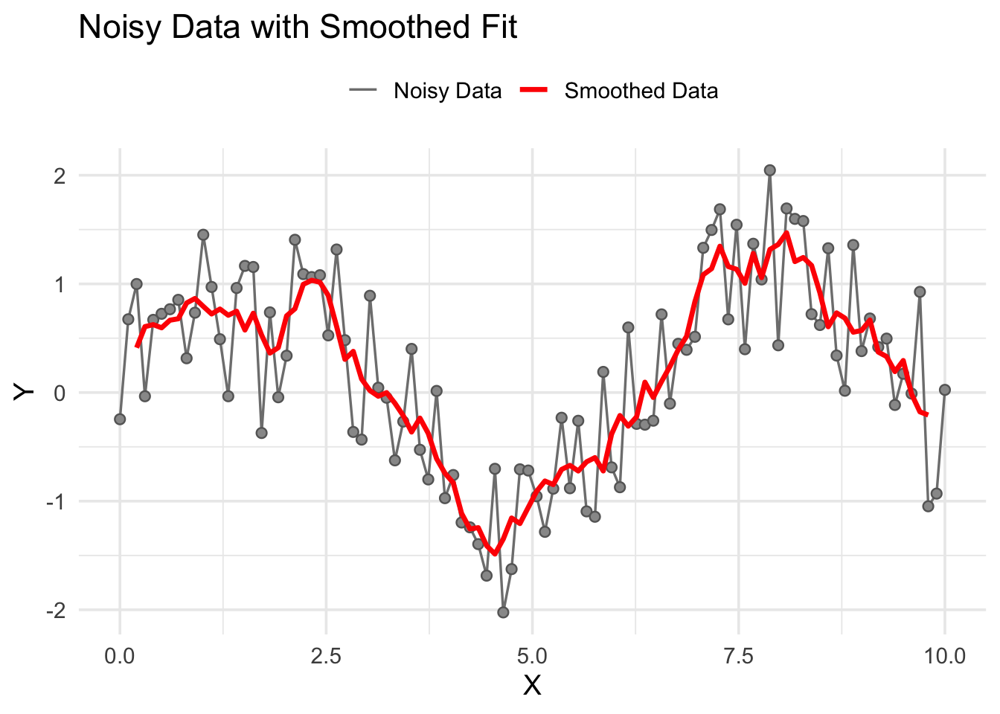
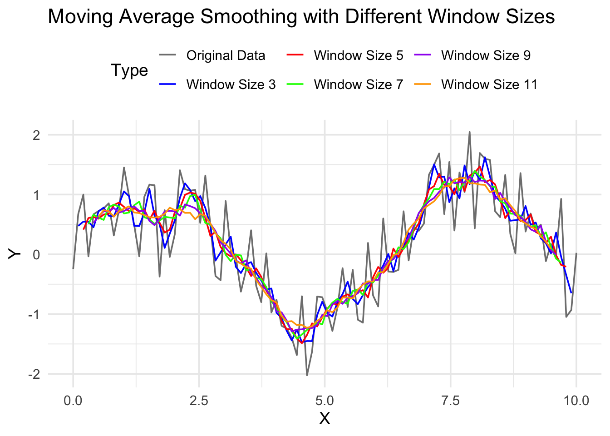
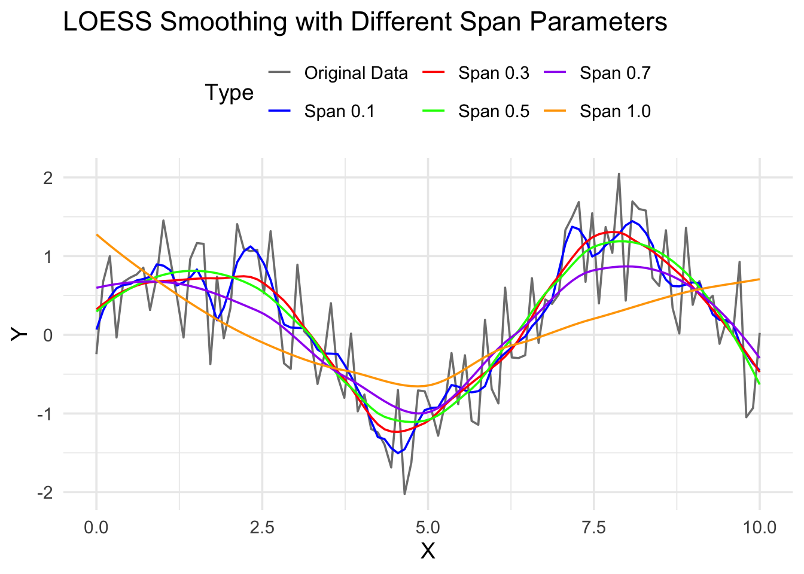
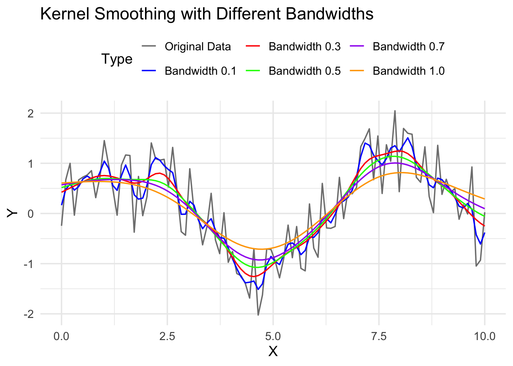
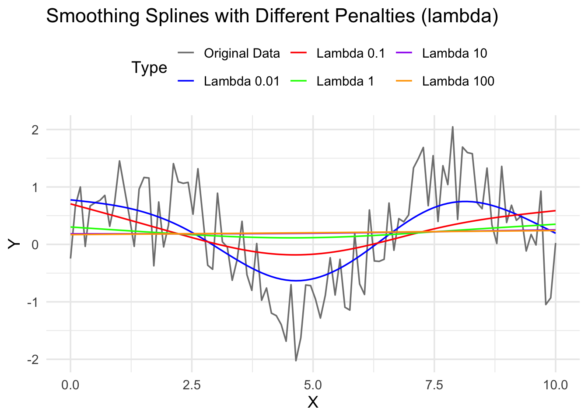

In statistics, we often deal with data. However, we know that there exist random noise when collecting the data. But what if the data contains too much noise, will we get any useful information?
library(ggplot2)library(dplyr)set.seed(8670)n <-100x <-seq(0, 10, length.out = n)y <-sin(x) +rnorm(n, sd =0.5)# Moving average smoothersmoothed_y <- stats::filter(y, rep(1/5, 5), sides =2)# Data framedf <-data.frame(x = x, y = y, smoothed_y =as.numeric(smoothed_y))# Plotggplot(df, aes(x = x)) +geom_line(aes(y = y, color ="Noisy Data"), linewidth =0.6) +geom_point(aes(y = y, color ="Noisy Data"), shape =21, fill ="gray60", color ="gray40", size =2) +geom_line(aes(y = smoothed_y, color ="Smoothed Data"), linewidth =1.2) +scale_color_manual(values =c("Noisy Data"="gray50","Smoothed Data"="red"),name =NULL) +labs(title ="Noisy Data with Smoothed Fit",x ="X",y ="Y") +theme_minimal(base_size =14) +theme(legend.position ="top" )
Warning: Removed 4 rows containing missing values or values outside the scale range
(`geom_line()`).

Once the data is smoothed, we can see the underlying trend more clearly. Smoothing techniques are widely used in various fields such as signal processing, time series analysis, and machine learning to enhance data quality and extract meaningful patterns. In this chapter, we will see a few techniques for smoothing data.
7.1 Moving Average Smoothing
One of the simplest smoothing techniques is the moving average. The moving average smooths data by averaging neighboring data points. The formula for a simple moving average with a window size of \(k\) is given by: \[
x_i^{\text{smoothed}} = \frac{1}{k} \sum_{j=i-\frac{k-1}{2}}^{i+\frac{k-1}{2}} x_j,
\] where \(x_i\) is the original data point, and \(x_i^{\text{smoothed}}\) is the smoothed data point.
Suppose \(\mathbf{x}=(x_1,\dots,x_n)\) and \(y_i=\sin(x_i)+N(0, 0.5^2)\) are the observed data points. We can apply a moving average smoother with a window size of \(k\) to smooth the data, where \(k=1,3,\dots,11\). The following R code demonstrates how to implement moving average smoothing with different window sizes and visualize the results.
set.seed(8670)n <-100x <-seq(0, 10, length.out = n)y <-sin(x) +rnorm(n, sd =0.5)# Moving average smoother (use odd windows to align with your legend)k <-c(3, 5, 7, 9, 11)smoothed_y_list <-lapply(k, function(window_size) {# centered moving average; edges will be NA (that’s expected) stats::filter(y, rep(1/ window_size, window_size), sides =2)})# Build data framedf <-data.frame(x = x, y = y)for (i inseq_along(k)) { df[[paste0("smoothed_y_", k[i])]] <-as.numeric(smoothed_y_list[[i]])}# Long format for ggplotlibrary(reshape2)library(ggplot2)df_melted <-melt( df,id.vars ="x",variable.name ="Type",value.name ="Value")# Order legend nicely and provide clean labelswanted_levels <-c("y", paste0("smoothed_y_", k))labels_named <-c(y ="Original Data","smoothed_y_3"="Window Size 3","smoothed_y_5"="Window Size 5","smoothed_y_7"="Window Size 7","smoothed_y_9"="Window Size 9","smoothed_y_11"="Window Size 11")colors_named <-c(y ="gray50","smoothed_y_3"="blue","smoothed_y_5"="red","smoothed_y_7"="green","smoothed_y_9"="purple","smoothed_y_11"="orange")df_melted$Type <-factor(df_melted$Type, levels = wanted_levels)ggplot(df_melted, aes(x = x, y = Value, color = Type)) +geom_line(na.rm =TRUE) +labs(title ="Moving Average Smoothing with Different Window Sizes",x ="X", y ="Y" ) +scale_color_manual(values = colors_named, labels = labels_named, drop =FALSE) +theme_minimal(base_size =14) +theme(legend.position ="top")

7.2 Local Regression
LOESS (Locally Estimated Scatterplot Smoothing) is a non-parametric regression method that combines multiple regression models in a k-nearest-neighbor-based meta-model. It is particularly useful for smoothing scatterplots. The LOESS method fits simple models to localized subsets of the data to build up a function that describes the deterministic part of the variation in the data, point by point.
\[
Y_i=\mu\left(x_i\right)+\varepsilon_i,
\] where \(\mu(x)\) is the unknown smooth regression function to be estimated, and represents the conditional expectation of the response, given a value of the predictor variables, and the \(\varepsilon\) is the random error. Local regression then estimates the function \(\mu( x )\), for one value of \(x\) at a time. Since the function is assumed to be smooth, the most informative data points are those whose \(x_i\) values are close to \(x\). This is formalized with a bandwidth \(h\) and a kernel or weight function \(W( \cdot)\), with observations assigned weights \[w_i ( x ) = W \left( \frac{x_i − x}{h}\right). \]
A typical choice of \(W\), used by Cleveland in LOWESS, is \(W(u)=(1-|u|^{3})^{3}\) for \(|u|<1\), although any similar function (peaked at \(u=0\) and small or 0 for large values of \(u\)) can be used. Questions of bandwidth selection and specification (how large should \(h\) be, and should it vary depending upon the fitting point \(x\)?) are deferred for now.
A local model (usually a low-order polynomial with degree \(p\leq 3\), expressed as \(\mu (x_{i})\approx \beta _{0}+\beta _{1}(x_{i}-x)+\ldots +\beta _{p}(x_{i}-x)^{p}\) is then fitted by weighted least squares: choose regression coefficients \(\left(\hat{\beta }_{0},\ldots ,{\hat {\beta }}_{p})\right)\) to minimize \[
\sum_{i=1}^n w_i(x)\left(Y_i-\beta_0-\beta_1\left(x_i-x\right)-\ldots-\beta_p\left(x_i-x\right)^p\right)^2 .
\]
Putting everything into a matrix form, we have \[
\hat{\boldsymbol{\beta}}=\left(\mathbf{X}^{\boldsymbol{\top}} \mathbf{W} \mathbf{X}\right)^{-1} \mathbf{X}^{\boldsymbol{\top}} \mathbf{W} \mathbf{y},
\] where \(\hat {\boldsymbol {\beta }}\) is a vector of the local regression coefficients; \(X\) is the \(n\times (p+1)\) design matrix with entries \((x_{i}-x)^{j}\); \(W\) is a diagonal matrix of the smoothing weights \(w_{i}(x)\); and \(y\) is a vector of the responses \(Y_i\).
Suppose \(\mathbf{x}=(x_1,\dots,x_n)\) and \(y_i=\sin(x_i)+N(0, 0.5^2)\) are the observed data points. We can apply LOESS smoothing with different span parameters to smooth the data, where \(span=0.1,0.3,0.5,0.7,1.0\). The following R code demonstrates how to implement LOESS smoothing with different span parameters and visualize the results.
set.seed(8670)n <-100x <-seq(0, 10, length.out = n)y <-sin(x) +rnorm(n, sd =0.5)# LOESS smoother functionloess_smooth <-function(x, y, span) { fit <-loess(y ~ x, span = span)predict(fit, x)}# Span valuesspan_values <-c(0.1, 0.3, 0.5, 0.7, 1.0)smoothed_y_list <-lapply(span_values, function(span) {loess_smooth(x, y, span)})# Build data framedf <-data.frame(x = x, y = y)for (i inseq_along(span_values)) { df[[paste0("smoothed_y_span", span_values[i])]] <- smoothed_y_list[[i]]}# Long format for ggplotlibrary(reshape2)library(ggplot2)df_melted <-melt( df,id.vars ="x",variable.name ="Type",value.name ="Value")# Order legend nicely and provide clean labelswanted_levels <-c("y", paste0("smoothed_y_span", span_values))labels_named <-c(y ="Original Data","smoothed_y_span0.1"="Span 0.1","smoothed_y_span0.3"="Span 0.3","smoothed_y_span0.5"="Span 0.5","smoothed_y_span0.7"="Span 0.7","smoothed_y_span1"="Span 1.0")colors_named <-c(y ="gray50","smoothed_y_span0.1"="blue","smoothed_y_span0.3"="red","smoothed_y_span0.5"="green","smoothed_y_span0.7"="purple","smoothed_y_span1"="orange")df_melted$Type <-factor(df_melted$Type, levels = wanted_levels)ggplot(df_melted, aes(x = x, y = Value, color = Type)) +geom_line() +labs(title ="LOESS Smoothing with Different Span Parameters",x ="X", y ="Y" ) +scale_color_manual(values = colors_named, labels = labels_named, drop =FALSE) +theme_minimal(base_size =14) +theme(legend.position ="top")

7.3 Kernel Smoothing
Another popular smoothing technique is kernel smoothing. Kernel smoothing uses a kernel function to weight neighboring data points when estimating the smoothed value at a given point. The formula for kernel smoothing is given by: \[
x_i^{\text{smoothed}} = \frac{\sum_{j=1}^{n} K\left(\frac{x_i - x_j}{h}\right) x_j}{\sum_{j=1}^{n} K\left(\frac{x_i - x_j}{h}\right)},
\] where \(K\) is the kernel function, \(h\) is the bandwidth parameter, and \(x_i^{\text{smoothed}}\) is the smoothed data point.
Some common kernel functions include the following:
Epanechnikov kernel: \(K(u) = \frac{3}{4}(1-u^2)\) for \(|u| \leq 1\), and \(0\) otherwise
uniform kernel: \(K(u) = \frac{1}{2}\) for \(|u| \leq 1\), and \(0\) otherwise
NoteChoice of the kernel and the bandwidth
The choice of the kernel function \(K\) is often less critical than the choice of the bandwidth \(h\). Common choices like the Gaussian kernel are widely used due to their smoothness and mathematical properties.
The choice of bandwidth \(h\) is crucial, as it determines the degree of smoothing. A smaller bandwidth results in less smoothing, while a larger bandwidth leads to more smoothing.
Suppose \(\mathbf{x}=(x_1,\dots,x_n)\) and \(y_i=\sin(x_i)+N(0, 0.5^2)\) are the observed data points. We can apply kernel smoothing with different bandwidths \(h\) to smooth the data, where \(h=0.1,0.3,0.5,0.7,1.0\). The following R code demonstrates how to implement kernel smoothing with different bandwidths and visualize the results.
set.seed(8670)n <-100x <-seq(0, 10, length.out = n)y <-sin(x) +rnorm(n, sd =0.5)# Kernel smoother functionkernel_smooth <-function(x, y, h) { n <-length(x) smoothed_y <-numeric(n)for (i in1:n) { weights <-dnorm((x[i] - x) / h) smoothed_y[i] <-sum(weights * y) /sum(weights) }return(smoothed_y)}# Bandwidthsh_values <-c(0.1, 0.3, 0.5, 0.7, 1.0)smoothed_y_list <-lapply(h_values, function(h) {kernel_smooth(x, y, h)})# Build data framedf <-data.frame(x = x, y = y)for (i inseq_along(h_values)) { df[[paste0("smoothed_y_h", h_values[i])]] <- smoothed_y_list[[i]]}# Long format for ggplotlibrary(reshape2)library(ggplot2)df_melted <-melt( df,id.vars ="x",variable.name ="Type",value.name ="Value")# Order legend nicely and provide clean labelswanted_levels <-c("y", paste0("smoothed_y_h", h_values))labels_named <-c(y ="Original Data","smoothed_y_h0.1"="Bandwidth 0.1","smoothed_y_h0.3"="Bandwidth 0.3","smoothed_y_h0.5"="Bandwidth 0.5","smoothed_y_h0.7"="Bandwidth 0.7","smoothed_y_h1"="Bandwidth 1.0")colors_named <-c(y ="gray50","smoothed_y_h0.1"="blue","smoothed_y_h0.3"="red","smoothed_y_h0.5"="green","smoothed_y_h0.7"="purple","smoothed_y_h1"="orange")df_melted$Type <-factor(df_melted$Type, levels = wanted_levels)ggplot(df_melted, aes(x = x, y = Value, color = Type)) +geom_line() +labs(title ="Kernel Smoothing with Different Bandwidths",x ="X", y ="Y" ) +scale_color_manual(values = colors_named, labels = labels_named, drop =FALSE) +theme_minimal(base_size =14) +theme(legend.position ="top")

7.4 Smoothing Splines
Smoothing splines are a flexible method for smoothing data by fitting a piecewise polynomial function to the data points. The smoothing spline minimizes the following objective function: \[
\sum_{i=1}^{n} \{y_i - f(x_i)\}^2 + \lambda \int (f''(x))^2 dx,
\] where \(y_i\) are the observed data points, \(f(x)\) is the smoothing spline, \(\lambda\) is the smoothing parameter that controls the trade-off between fidelity to the data and smoothness of the spline, and \(f''(x)\) is the second derivative of the spline function.
Suppose \(\mathbf{x}=(x_1,\dots,x_n)\) and \(y_i=\sin(x_i)+N(0, 0.5^2)\) are the observed data points. We can apply smoothing splines with different smoothing parameters \(\lambda\) to smooth the data, where \(\lambda=0.01,0.1,1,10,100\). The following R code demonstrates how to implement smoothing splines with different smoothing parameters and visualize the results.
set.seed(8670)n <-100x <-seq(0, 10, length.out = n)y <-sin(x) +rnorm(n, sd =0.5)# Smoothing spline using lambda (penalty on curvature)smoothing_spline <-function(x, y, lambda) { fit <-smooth.spline(x, y, lambda = lambda) # <-- use lambda, not sparpredict(fit, x)$y}# Smoothing parameters (penalty sizes)lambda_values <-c(0.01, 0.1, 1, 10, 100)smoothed_y_list <-lapply(lambda_values, function(lambda) {smoothing_spline(x, y, lambda)})# Build data framedf <-data.frame(x = x, y = y)for (i inseq_along(lambda_values)) { nm <-paste0("smoothed_y_lambda", lambda_values[i]) df[[nm]] <- smoothed_y_list[[i]]}# Long format for ggplotlibrary(reshape2)library(ggplot2)df_melted <-melt( df,id.vars ="x",variable.name ="Type",value.name ="Value")# Order legend & labelswanted_levels <-c("y", paste0("smoothed_y_lambda", lambda_values))labels_named <-c(y ="Original Data","smoothed_y_lambda0.01"="Lambda 0.01","smoothed_y_lambda0.1"="Lambda 0.1","smoothed_y_lambda1"="Lambda 1","smoothed_y_lambda10"="Lambda 10","smoothed_y_lambda100"="Lambda 100")colors_named <-c(y ="gray50","smoothed_y_lambda0.01"="blue","smoothed_y_lambda0.1"="red","smoothed_y_lambda1"="green","smoothed_y_lambda10"="purple","smoothed_y_lambda100"="orange")df_melted$Type <-factor(df_melted$Type, levels = wanted_levels)ggplot(df_melted, aes(x = x, y = Value, color = Type)) +geom_line() +labs(title ="Smoothing Splines with Different Penalties (lambda)",x ="X", y ="Y" ) +scale_color_manual(values = colors_named, labels = labels_named, drop =FALSE) +theme_minimal(base_size =14) +theme(legend.position ="top")

7.5 Choice of the Method and the parameters
The choice of smoothing method and its parameters (e.g., window size for moving average, span for LOESS, bandwidth for kernel smoothing, and smoothing parameter for splines) depends on the specific characteristics of the data and the goals of the analysis. Here are some general guidelines:
Moving Average: Simple and effective for evenly spaced data. Suitable for short-term trend analysis.
LOESS: Flexible and can handle non-linear relationships. Good for exploratory data analysis.
Kernel Smoothing: Provides a smooth estimate of the underlying function. The choice of bandwidth is crucial.
Smoothing Splines: Offers a balance between fit and smoothness. The smoothing parameter controls this trade-off.
7.6 Conclusion
Smoothing techniques are essential tools in statistics for reducing noise and revealing underlying patterns in data. In this chapter, we explored 3 common smoothing methods: moving average smoothing, kernel smoothing, and smoothing splines. Each method has its advantages and is suitable for different types of data and applications. By understanding and applying these techniques, we can enhance data quality and extract meaningful insights from noisy observations.